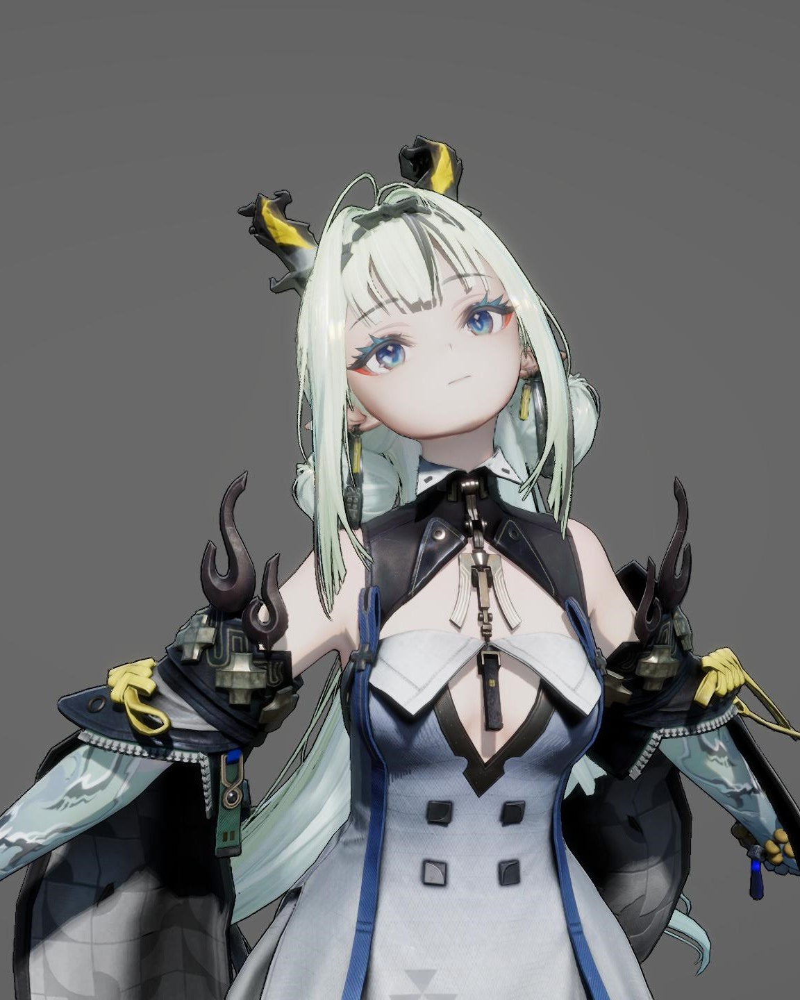
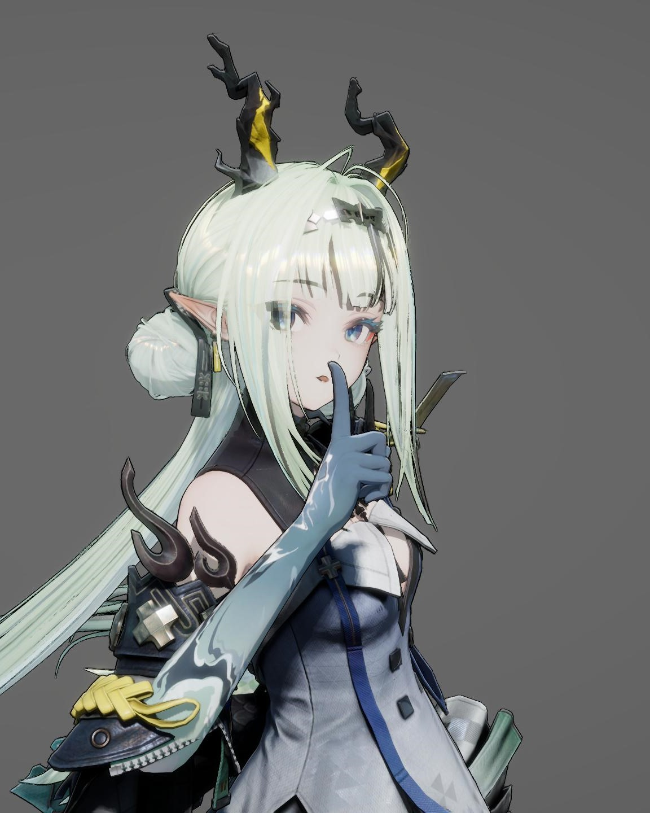
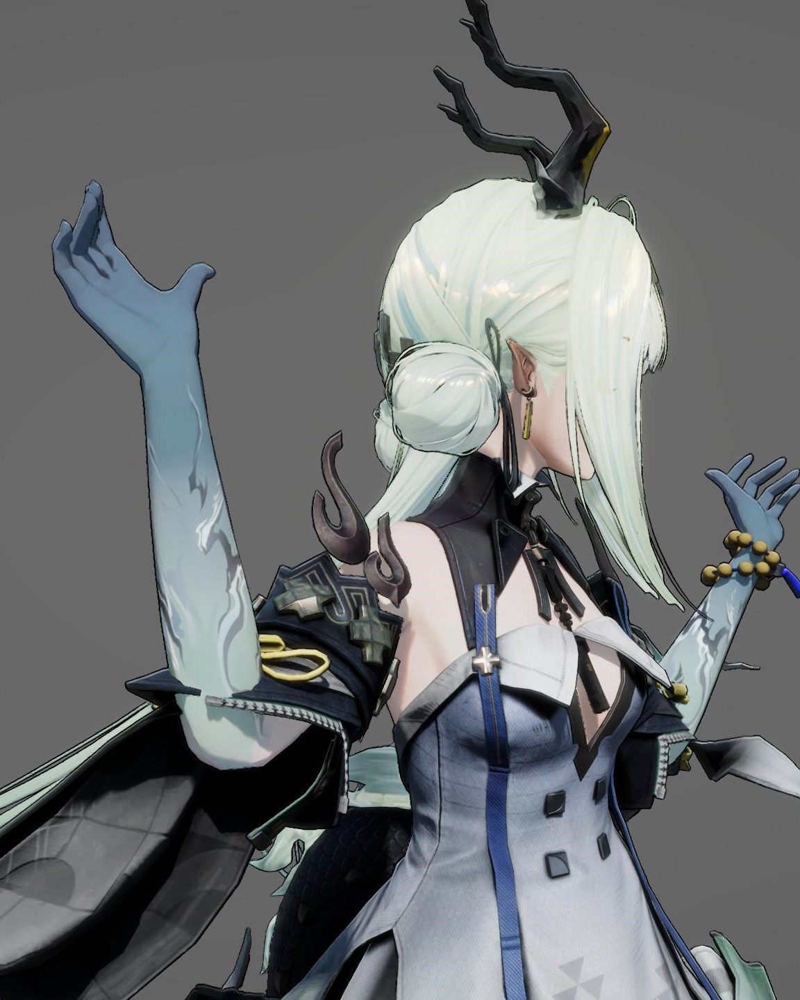
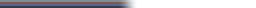

基础 PBR
普通法线、粗糙度、金属度与 AO，结合 URP GGX、SH 环境光和反射探针。
- 完整漫反射 Ramp
- 主光、附加灯与原生阴影
- 基础描边与 Alpha 裁剪
Unity 6.3 · URP 17.3
完整的漫反射 Ramp，基础的角色着色。基础 PBR、脸部 SDF 与头发 UV 高光共用一套材质流程。
RENDERS
明日方舟：终末地 · 祀
Unity 6.3 / URP 17.3 实机渲染，未做后期修图。



角色「祀」来自《明日方舟：终末地》，模型制作 · 茶叶味香皂。角色与模型相关权利归各自权利方，渲染图用于个人展示与交流。
FEATURES
三个材质入口，共享一套基础光照。
普通法线、粗糙度、金属度与 AO，结合 URP GGX、SH 环境光和反射探针。
基于头部前、右、上方向计算受光，提供左右镜像、明暗偏移和柔软度控制。
用贴图控制高光形状，通过 UV 缩放、平移与基础视角位移调整发束表现。
DIFFUSE RAMP
固定 LOD 0 查表，配合区域遮罩、Y 选行与静态 IGN 抖动，让不同部位共用明确的明暗流程。

INSTALL
通过 Unity Package Manager 导入预览版。
打开 Package Manager，选择 Install package from git URL，粘贴地址。
https://github.com/Gz-beverage/GZtoon-Preview.git#v0.1.0-preview.1
Create → GZtoon Preview，选 Base / Face / Hair，指定底色、贴图与 Ramp。
Tools → GZtoon Preview 安装描边；脸部用 Preview Head Basis 绑定头部。
导入 Basic Demo，或创建 Volume 调整 Bloom、曝光与饱和度。